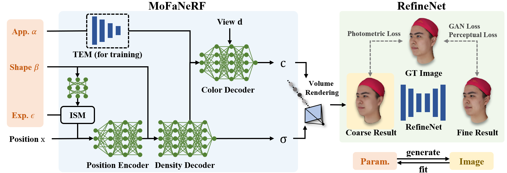
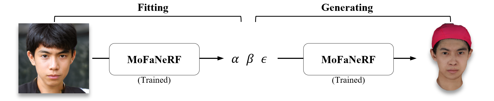
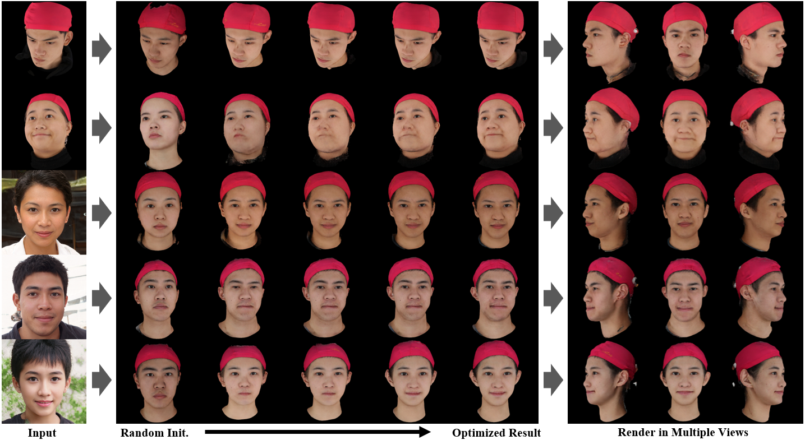

MoFaNeRF:Morphable Facial Neural Radiance Field
Yiyu Zhuang, Hao Zhu, Xusen Sun, Xun Cao
Lab CITE, Nanjing University


Abstract

Free-view Syn.
Face Rigging
Face Editing
We propose a parametric model that maps free-view images into a vector space of coded facial shape, expression and appearance using a neural radiance field, namely Morphable Facial NeRF. Specifically, MoFaNeRF takes the coded facial shape, expression and appearance along with space coordinate and view direction as input to an MLP, and outputs the radiance of the space point for photo-realistic image synthesis. Compared with conventional 3D morphable models (3DMM), MoFaNeRF shows superiority in directly synthesizing photo-realistic facial details even for eyes, mouths, and beards. Also, continuous face morphing can be easily achieved by interpolating the input shape, expression and appearance codes. By introducing identity-specific modulation and texture encoder, our model synthesizes accurate photometric details and shows strong representation ability. Our model shows strong ability on multiple applications including image-based fitting, random generation, face rigging, face editing, and novel view synthesis. Experiments show that our method achieves higher representation ability than previous parametric models, and achieves competitive performance in several applications.
To the best of our knowledge, our work is the first facial parametric model built upon a neural radiance field that can be used in fitting, generation and manipulation.
Method

MoFaNeRF takes appearance code α, shape code β, expression code ε, position code x and view direction d as input, synthesizing a coarse result which is then refined by a RefineNet. We train our network with 6000 multi-view models released by FaceScape.
Once trained, as shown in the following, MoFaNeRF can be used in generating (synthesize free-view images given parameters) or fitting (optimize for parameters given a single image).
More Results
Face Rigging


Face Editing
Random Generation
Fitting
